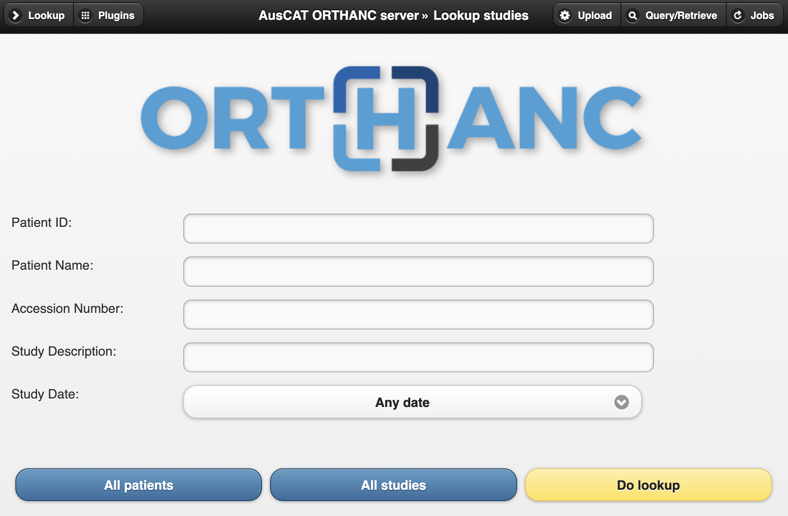

Orthanc#
Overview#
Orthanc is an open-source lightweight DICOM server which is used within the AusCAT framework to store anonymised imaging data at each client. Orthanc provides much of the same functionality as a standard DICOM Picture Archiving System (PACS) but with some additional features which are useful within AusCAT. Those key features are:
Web interface to browse data available
HTTP REST API to fetch data directly from scripts
User authentication to access web interface and API
In the AusCAT infrastructure/project all data stored in Orthanc is anonymised. To achieve this, no imaging data is sent directly to Orthanc. DICOM data is first sent to the CTP service which has pipelines configured to strip all identifiable information from DICOM headers and replace IDs using the data available in the KeyDB. The anonymised DICOM data is then sent to Orthanc.
Once data has been imported via CTP, this data will be stored in Orthanc ready for analysis. Usually a project to be run within AusCAT that uses imaging data will require a script which will extract the data from Orthanc, convert it to a format used within the project and prepare it for analysis.
Usage#
You can interact with Orthanc using either the web interface or a HTTP API.
Web Interface#
The Orthanc web interface is useful to explore the data you have available and to confirm that data is arriving properly after being sent from CTP. To log in, visit the following URL, replacing the [host-ip] with the IP address of the system running the Orthanc Docker container:
http://[host-ip]:8042
After you authenticate using the configured credentials (see below) you can browse the data available. On the main screen, press the “All Patients” button to see a list of all patients which have been stored in Orthanc. You can also search for a specific patient ID, keeping in mind that these IDs are stored in their anonymised form.

Click on a patient to browse the imaging data available.
HTTP REST API#
The HTTP REST API can be accessed using the same URL as the web interface. This API is documented thoroughly in the Orthanc documentation.
However if you intend using this API then it is recommended to use a tool which provides functionality to access the API via Python. pyorthanc is a 3rd-party Python library to enable communication with Orthanc via Python scripts. Our PyDicer tool which is used for DICOM data conversion and analysis is able to extract data from Orthanc using this API.
Dependencies#
Within AusCAT, the Orthanc container does not have any specific dependencies once imaging data has been transferred to it. However during the transfer of imaging data from clinical systems both the CTP Docker service and the KeyDB Docker service must be running to enable anonymisation of imaging data prior to transfer to Orthanc. Once this is complete, any data stored within Orthanc will be available via the web-interface or the API with only the Orthanc service running. However, usually Orthanc, CTP and KeyDB would be left running at all times.
Ports and network access#
There are two ports which Orthanc makes available within the Docker container:
8042#
Port 8042 provides access to the web interface of Orthanc as well as the HTTP REST API. Be sure to map this port to the host OS within your Docker stack to ensure that you can access this web interface. You will then be prompted for the username/password combination. If accessing via REST API these credentials must also be provided.
4242#
Port 4242 is used to accept incoming DICOM data using the DICOM communication protocol. In practice, this will only be used by CTP to transfer anonymised files to Orthanc. If CTP and Orthanc are deployed in separate Docker stack (e.g. running on two different Virtual Machines) then this port must also be mapped to the host to enable CTP to transfer the anonymised files to Orthanc.
Configuration#
Orthanc requires minimal configuration. It is important to map port 8042 to the host OS. Most importantly you should map an appropriate location on the host file system to /var/lib/orthanc/db. This is important as the DICOM imaging data is stored at that location. If this isn’t mapped properly then this data will not persist when the container is refreshed.
Important: Carefully choose an appropriate location to map to
/var/lib/orthanc/db. Keep in mind this is storing imaging data which can grow very large. Be sure to consult the AusCAT infrastructure guide for more information on disk space requirements.
A sample Docker stack definition to deploy Orthanc is:
orthanc:
image: "auscat/orthanc:latest"
ports:
- 8042:8042
volumes:
- /path/to/host/filesystem:/var/lib/orthanc/db
Secrets#
A default orthanc.json file is provided within the Docker image. This makes deploying the container in a simulation environment easy without requiring further configuration. The default username and password combination is:
Username: admin
Password: admin
Important: Only ever use the default username and password combination in a simulation or development environment!
In a production deployment you should provide a secret named orthanc.json which is mapped to /run/secrets/orthanc.json. You can add this using the Secrets tab in Portainer. Here is a sample structure for orthanc.json:
{
"Name": "AusCAT ORTHANC server",
"RemoteAccessAllowed": true,
"AuthenticationEnabled": true,
"RegisteredUsers": {
"admin": "a-very-secure-password"
}
}
Name: The name of the Orthanc instance.RemoteAccessAllowed: Should be set to true to enable access to the web interface and API.AuthenticationEnabled: Should always be true to ensure authentication is used.RegisteredUsers: Provide username/password pairs which can be used to authenticate with Orthanc.
A more detailed description of settings available in orthanc.json is available here.
Finally, be sure to provide the orthanc.json secret in your Docker stack:
orthanc:
image: "auscat/orthanc:latest"
ports:
- 8042:8042
- 4242:4242
volumes:
- /path/to/host/filesystem:/var/lib/orthanc/db
secrets:
- orthanc.json
secrets:
orthanc.json:
external: True
Important: In a production deployment always provide a custom
orthanc.jsonsecret defining a secure password!
Docker Image#
AusCAT’s Orthanc image is available at: auscat/orthanc
The base image used is osimis/orthanc which provides all Orthanc functionality preinstalled. The only addition made in the AusCAT image is to provide a default orthanc.json for use in the simulation environment. The base image is available at: https://hub.docker.com/r/osimis/orthanc
The AusCAT Docker image Dockerfile is available at: https://github.com/AustralianCancerDataNetwork/auscat_imaging/tree/main/orthanc
Which can be built using the command:
cd auscat-imaging/orthanc
docker build -t auscat/orthanc .
Troubleshooting#
Data not arriving in Orthanc#
If you are sending data from your clinical systems through CTP it should arrive in Orthanc following anonymisation. If this is not working, first you should check that CTP has accepted the data and processed successfully (see CTP documentation troubleshooting).
If CTP indicates that the data was sent on to Orthanc, then ensure that the Orthanc image is reachable from CTP. Ideally these will be deployed on the same Docker stack which should ensure that they are on the same Docker network. Make sure the name of this service in the Docker stack is orthanc (if not the CTP pipelines need to be updated).
To test Orthanc in isolation you can map the DICOM port 4242 to the host OS and try sending some data directly to this endpoint (make sure this is some dummy/phantom data as it won’t be anonymised). If this arrives it indicates the issue is with CTP communicating with Orthanc. If this doesn’t arrive then check your network configuration to ensure you can communicate with the host IP via port 8042. You may also like to check Orthanc logs to determine if there are any errors reported.
Unable to access web interface#
This is usually due to the 8042 port not being accessible. Make sure you map this to your host OS as described in the Docker stack example above. If this still isn’t working, there may be a firewall blocking this traffic. Consult your IT networking team to help understand if special permissions need to be given within your local firewall to enable this access.
Logs#
The Orthanc Docker container will log to the standard output as is usual with Docker. These logs can be inspected within Portainer or by using the docker log to determine if Orthanc is reporting any errors. More information about collecting Orthanc logs can be found here.
Support resources#
To learn more about Orthanc, they host comprehensive documentation including the Orthanc Book and Frequently Asked Questions which can be found here.